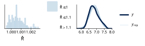
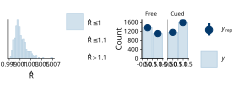

Advances in experimental, data collection, and statistical methods have brought population heterogeneity in psychological processes to the fore. Heterogeneity is best thought of as a distribution of unit-level causal effects with a mean (effect for the average unit, often a person) and variance (between-unit differences). This distribution can be summarized using heterogeneity intervals and ratios that permit comparison across samples (Bolger et al., 2019). Current practices, however, do not adequately account for the uncertainty in these summaries: Sample intervals and ratios will always underestimate the range of plausible effects in the population. Using hierarchical Bayesian models and datasets from social and cognitive psychology, we provide a walkthrough of effective heterogeneity indices and graphical displays that convey uncertainty appropriately. We cover interval, proportion, and ratio measures of heterogeneity, along with their estimation and interpretation. These tools can aid theory specification by properly documenting the full range of variation in psychological phenomena. (Full text available at https://doi.org/10.31234/osf.io/mwg4f.)
When building and testing theories, psychologists have long focused on asking whether an effect exists and what its magnitude might be. Yet, establishing that an independent variable affects a dependent variable, possibly to some specific extent, may not be a sufficient description of the phenomenon if the effect varies appreciably from one treatment unit (e.g., person) to another. The relevance of such variation in the effect, or heterogeneity, for theoretical claims is recognized yet often insufficiently described in the empirical literature (Bolger et al., 2019; Brand & Thomas, 2013; Grice et al., 2020; Richters, 2021).
One reason for the scarcity of reporting and accurate interpretation of heterogeneity is that psychologists still often analyze data with models that obscure its size, such as traditional ANOVA (Bolger et al., 2019). However, more informative modeling is not the only challenge: although hierarchical (or multilevel, mixed-effects) models (Gelman & Hill, 2007) are becoming more common, many users still lack the conceptual and practical tools to take full advantage of the greater explanatory power these models provide.
When person-to-person variability is modeled and reported, those descriptions often focus on point estimates (Bolger et al., 2019), sample statistics (Beyens et al., 2020; Grice et al., 2020; Vuorre et al., 2022), graphical displays (Beck & Jackson, 2022), or quantities such as the standard deviation of person-specific parameters (Bartoš et al., 2023). These summaries, as we will show, provide an incomplete picture of variation that is sometimes difficult to interpret: If, for example, a treatment effect is found for 60% of participants in a sample but the uncertainty inherent in that percentage is not considered, the analyst cannot draw inferential conclusions about the effect’s prevalence in the population. To effectively communicate heterogeneity, we need not only meaningful measures of it, but also effective methods for describing the associated uncertainties. Our goal in this paper is to address this challenge by illustrating measures of heterogeneity and how to communicate them, both numerically and graphically, in ways that take uncertainty into account.
Our plan is as follows. First, using a dataset from social psychology as an example case, we review established methods for estimating and communicating the expected heterogeneity in causal effects. We then show further ways in which model parameters can be transformed to communicate the probability distribution of causal effects. We review the concepts and computations underlying three heterogeneity metrics: (i) displays of the expected population normal distribution implied by the causal effect mean and standard deviation; (ii) upper and lower bounds of heterogeneity intervals; and (iii) proportions of the population showing effects above or below some cut-point (e.g., the prevalence proportion). We then move from single summaries with no uncertainty information to full posterior uncertainty distributions. These uncertainty (or belief) distributions are central features of modern Bayesian hierarchical models (Gelman et al., 2013). Finally, using an example dataset from cognitive psychology, we extend these methods to allow comparisons of heterogeneity across populations of persons and stimuli. To facilitate practical applications, all code and data underlying this manuscript are available in our online supplement(Vuorre et al., 2026).
Causal effect heterogeneity case study
To begin our exposition, we reproduce the analyses from Bolger et al. (2019). In their study, using data drawn from Scholer et al. (2014), 62 participants saw 20 positively and 20 negatively valenced words and judged whether or not each word was self-descriptive. Because most people are motivated to view themselves positively, Bolger et al. (2019) predicted that responses to positively valenced words would be faster than to negatively valenced words (Scholer et al., 2014).
Code
dir.create("data", FALSE)# Load, save, & clean example data from Bolger et al. (2019)path <-"data/bolger-etal.zip"if (!file.exists(path)) {download.file("https://github.com/kzee/heterogeneityproject/archive/refs/heads/master.zip",destfile = path )unzip(path, exdir =str_remove(path, ".zip"), junkpaths =TRUE)}# Save variables as numerical & factordat <-read_csv("data/bolger-etal/heterogeneity_dataset1_traitvalence.csv") |># Cleaning as in Bolger et al 2019filter( response.keys =="up",as.numeric(scale(rt)) <3,!(id %in%c(250, 257, 272)) ) |># Some more cleaningmutate(person =fct_anon(factor(id)), trial,valence =factor( valenceE,levels =c(-0.5, 0.5),labels =c("Negative", "Positive") ),rt = logrt ) |>select(person, trial, valence, rt) |>arrange(person, trial)
We first wrangled the data as in Bolger et al. (2019), which led to a sample of 1,321 trials from 59 participants where stimuli were endorsed as self-descriptive. We show a sample of these data in Table 1.
Then, we estimated the same statistical model (Equation 1 - 3). We modeled the log-transformed reaction time of person \(j\) on trial \(i\) as a random draw from a normal distribution1 with mean \(\eta\) (eta), which could differ between trials \(i\) and individuals \(j\), and standard deviation \(\sigma\) (sigma), which we assumed constant across individuals and trials:
Then, we specified a model of the mean of the logRT distribution (\(\eta_{ij}\)) such that the regression coefficients captured our substantive questions:
This equation includes two sets of parameters: The first set contains \(\beta_0\) (beta), the intercept, and \(\beta_1\), the slope or effect of valence, V (V is coded as -0.5 for negatively valenced words, and 0.5 for positively valenced words). Parameters in this set do not have further subscripts: In the frequentist tradition, they are considered unknown population constants—not modelled on covariates and having a single true value—and are typically referred to as “fixed” parameters (e.g. Raudenbush & Bryk, 2002). The second set of parameters, \(\gamma_{0j}\) (gamma) and \(\gamma_{1j}\), have the subscript \(j\) to indicate that they are person-specific deviations from the average intercept and slope, respectively. That is, \(\beta_0 + \gamma_{01}\) is the intercept (average log reaction time across negative and positive stimuli, i.e., when V = 0) for person \(j = 1\). In frequentist terminology, these are typically called “random” parameters because they are modeled as varying randomly according to a specified distribution. Following standard multilevel modeling assumptions, we model \(\gamma_{0j}\) and \(\gamma_{1j}\) as draws from a bivariate normal distribution:
In this equation, we assume that the person-specific deviations \(\gamma_{0j}\) and \(\gamma_{1j}\) have means of zero (because the means are added to them in Equation 2), standard deviations \(\tau\) (tau), and a correlation \(\rho\) (rho). Perhaps confusingly, \(\tau\)s and \(\rho\) are also sometimes called random effects because they describe random (co)variations of the person-specific effects. To be clear, despite this naming convention the \(\tau\)s and \(\rho\) are features of the population, not of any one individual.
Substantively, these equations mean that the extent to which the valence effect on logRT varies around the population average effect (\(\beta_1\)) is estimated by the standard deviation \(\tau_1\). Thus, for example, the valence effect on logRT for person 4 is estimated by \(\beta_1 + \gamma_{14}\). \(\tau_0\), on the other hand, describes the standard deviation of the population of individuals’ average logRTs across negatively and positively valenced words. So defined, the average logRT across all stimuli for, e.g., person 4 is estimated by \(\beta_0 + \gamma_{04}\). \(\rho\) is a correlation indicating the extent to which between-person differences in average logRTs are correlated with between-person differences in valence effects.
With the dataset illustrated in Table 1, we can estimate this model using standard (restricted) maximum likelihood methods as implemented in, for example, the R package lme4 (Bates et al., 2015; R Core Team, 2024). We show a conventional summary of this model’s estimated parameters in Table 2.
Code
# Fit Model 1 with lmer, explicitly include intercepts (`1`) for clarityfit_lmer <-lmer( rt ~1+ valence + (1+ valence | person),data = dat)
For the average person, the estimated effect of positive valence on logRT is -0.16 log seconds, with a 95% confidence interval (CoI2) extending from -0.20 to -0.12. The estimated standard deviation of valence effects in the population is 0.12 log seconds. The lme4 software package does not report a standard error or CoI for (co)variance parameters by default, and we therefore calculated it by bootstrapping, using lme4’s confint(..., method = "boot") method. The resulting 95% bootstrap CoI of the valence effect’s standard deviation was [0.08, 0.16].
Heterogeneity distribution at maximum likelihood estimate of \(\beta_1\) and \(\tau_1\)
Rows 2 and 4 in Table 2 define the expected normal distribution of valence effects in the population. In other words, our point estimate of the distribution of valence effects is Normal(-0.16, 0.122). We illustrate this distribution in Figure 1 A, which shows a normal density curve with mean \(\beta_1\) = -0.16 and standard deviation \(\tau_1\) = 0.12. The area under the curve (AUC) within one standard deviation of the mean is shaded in dark grey, and the AUC within two standard deviations with light grey. While the mean and SD are already informative, they yield additional and more directly interpretable heterogeneity descriptors when appropriately transformed (Figures 1 B-D; we turn to these below).
Figure 1: Heterogeneity distribution of valence effects and various descriptions of their expected heterogeneity as estimated with Model 1. A. The normal density curve defined by the point estimates of the valence effect distribution’s mean (\(\beta_1\)) and standard deviation (\(\tau_1\)). Shaded areas represent areas under the normal curve within one (dark) and two (light) standard deviations of the mean. B. The 90% Heterogeneity Interval as represented by a line segment with arrows, and the blue shaded area. C. Proportion of negative valence effects in the population (blue). D. Proportion of valence effects in the population that are within the region of practical equivalence to zero (ROPE; blue).
The distribution of valence effects in Figure 1 A is an incomplete description of heterogeneity for two reasons. First, it does not incorporate uncertainty in the two determinants of heterogeneity (\(\beta_1\) and \(\tau_1\)): If they are precisely estimated, i.e. when uncertainty regarding them is negligible, the distribution and any quantities calculated from them would characterize the population well. If they are estimated with considerable uncertainty, the distribution or their transformations would characterize the population poorly. We return to this key issue below. Second, the distribution or its parameters do not, for many purposes, communicate heterogeneity in clear and actionable terms. Below, we introduce several metrics that directly describe e.g. where a given proportion of the slopes are expected to fall.
Interval descriptors
First, we can use the point estimates in Table 2 to construct an expected heterogeneity interval(Bolger et al., 2019) that describes the range within which a given percentage of the population’s slopes are expected to fall (Figure 1 B). First, we determine an appropriate percentage to describe. By convention, Bolger et al. (2019) and others have focused on the 95% heterogeneity interval (HI95). However, because there are already confusingly many quantities using the five percent cutoff, in this manuscript we focus on the 90% heterogeneity interval, and reserve 95% to descriptions of uncertainty, such as confidence or credibility intervals. The appropriate percentage for a heterogeneity interval is determined by the substantive and communicative aims at hand; for our illustration 90% seemed reasonable. We illustrate the HI90 of valence effects in Figure 1 B, and depict its construction in Figure 2.
Figure 2: Construction of point estimates of the heterogeneity interval’s limits. While HI90 can be depicted on the probability density function (PDF; A.; reproduction of Figure 1 B), its construction is easier to depict on the cumulative distribution function (CDF; B.), \(\Phi(x; \beta_1, \tau_1)\). To construct a 90% heterogeneity interval, we pass 0.05 and 0.95 to the inverse of the CDF: HI90 = \(\Phi^{-1}\left([0.05, 0.95]; \beta_1, \tau_1 \right)\).
To calculate a heterogeneity interval, we first specify the desired probability limits: for a \(100\times\pi\%\) interval, we use the limits \((1 \pm \pi)/2\). Thus, for a 90% interval, we use 0.05 and 0.95, which together define the central 90% of the distribution (blue horizontal lines extending from the Y-axis to the CDF in Figure 2 B). Then, we pass those limits and the estimated mean and standard deviation to the normal quantile function \(\Phi^{-1}\) (phi, qnorm() in R) to get the interval: HI90 = \(\Phi^{-1}((1 \pm \pi)/2; \beta_1, \tau_1) = \Phi^{-1}([.05, .95];\) -0.16, 0.12) = [-0.36, 0.04] (blue vertical lines extending from the CDF to the X-axis in Figure 2 B). In words, this function calculates the 0.05 and 0.95 quantiles of the normal distribution defined by the point estimates of the mean (\(\beta_1\)) and standard deviation (\(\tau_1\)): we expect 90% of valence effects in the population to fall in the [-0.36, 0.04] interval.
Proportion descriptors
The above HI90 summarizes where a 90% of individuals’ effects in the population are likely to fall. In contrast, it might be more informative to summarize proportions of effects above or below some critical value or within some critical range. For example, we might ask “What proportion of individuals in the population endorse positively valenced words faster?” In other words, we ask a question of prevalence: what proportion of the heterogeneity distribution is below zero? We label this quantity \(p^-\) for proportion of population with negative effects (those who are faster to endorse positively valenced words as self-descriptive). In contrast, \(p^+\) would describe the proportion of population with positive effects (those who are slower to endorse positively valenced words as self-descriptive). We illustrate the construction of this quantity in Figure 3.
Figure 3: Construction of the point estimate of the proportion of negative effects (\(p^{-}\)). A. While \(p^{-}\) can be depicted on the probability density function (PDF; reproduced from Figure 1 C), its construction is easier to depict on the cumulative distribution function (CDF B): \(p^{-} = \Phi(0; \beta_1, \tau_1)\).
To calculate the proportion of the population whose valence effects are below zero, we pass zero (the critical value illustrated as a vertical line extending from the X-axis to the CDF in Figure 3 B) and the estimated mean and standard deviation to the normal cumulative distribution function (\(\Phi\); pnorm() in R): \(p^{-} = \Pr(\textrm{Valence effect} \le 0) = \Phi(0; \beta_1, \tau_1) = \Phi(0;\) -0.16, 0.12) = 90.4%. This number, depicted as a horizontal blue line extending from the CDF to the Y-axis in Figure 3 B, is the probability that a random slope from this population would take a negative value, or, in other words, the proportion of individuals in the population who are expected to endorse positive words faster than negative words.
Using zero as a critical value might not be sufficiently informative, however, especially when theory or application allows the specification of a region of practical equivalence (ROPE) around zero (Anvari & Lakens, 2021; Kruschke, 2014; Kruschke & Liddell, 2017; Lakens et al., 2018). In common applications, ROPE is used to infer whether an estimated parameter, such as the effect of valence on logRT for the average person, is of practical importance. But one can equally well use a ROPE to draw inferences about the heterogeneity of valence effects in the population. In Figure 4, we depict the construction of a [−0.1, 0.1] ROPE for valence effect heterogeneity and quantify the proportion of the population that falls within it.
Figure 4: Construction of the point estimate of the proportion of effects in the ROPE. A. While \(p^{ ext{ROPE}}\) can be depicted on the probability density function (PDF; reproduced from Figure 1 D), B. its construction is easier to depict on the cumulative distribution function (CDF): \(p^{\text{ROPE}} = \Phi(\epsilon; \beta_1, \tau_1) - \Phi(- \epsilon; \beta_1, \tau_1)\).
To calculate the proportion of individuals in the population whose valence effect falls within a given region of practical equivalence (Figure 4 B), we use the normal cumulative distribution function. First, we choose appropriate values of \(\epsilon\), here the values −0.1 and 0.1 depicted as blue vertical lines in Figure 4 B. Given these numbers, we then calculate \(p^{\text{ROPE}} = \Pr(-0.1 \le \textrm{Valence effect} \le 0.1) = \Phi(0.1; \beta_1, \tau_1) - \Phi(-0.1; \beta_1, \tau_1)\) = 29.6% (depicted as the difference in the horizontal blue lines in Figure 4 B). That is, 29.6% of the population is expected to have valence effects that are within the [−0.1, 0.1] ROPE. Note that this statement’s validity critically depends on the theoretical validity of the chosen ROPE interval.
Ratio descriptors
Interval and proportion descriptors of heterogeneity are based on raw measurement units, such as logRT in the running example. There is also a contrasting or relative way to describe heterogeneity such as the ratio of an effect distribution’s standard deviation to its mean. Relative metrics like this are useful when raw units are difficult to interpret or when comparing heterogeneity across different populations or experimental conditions (see below). In the current example, the ratio of the standard deviation to the mean (\(\frac{\tau_1}{\beta_1}\)) is 0.77.3
Bolger et al. (2019, p. 609) suggest as a rule of thumb that heterogeneity is noteworthy when the ratio of the standard deviation to the mean effect is 0.25 or greater: a ratio of 1/4 implies a HI95 with limits that are 0.5 to 1.5 times the average effect. With the current data and model, the ratio \(\frac{\tau_1}{\beta_1}\) is 0.77, a value three times larger than the cutoff for noteworthiness. While this heuristic can sometimes be useful, we urge users to apply domain-specific knowledge when considering critical values or thresholds.
Missing uncertainty
The expected normal distribution of valence effects and its transformations ignore uncertainty inherent in the estimated parameters. That is, we calculated HI90, \(p^-\), and the other heterogeneity measures from the point estimates \(\beta_1\) = -0.16 and \(\tau_1\) = 0.12. We did not use any information about the precision or uncertainty with which these parameters were estimated. We have now arrived at the crux of the current work: how should we estimate and describe heterogeneity in psychological phenomena such that the fundamental uncertainty in the estimated parameters is retained?
Incorporating inferential uncertainty to assessments of heterogeneity
So far, we have combined model parameters’ point estimates to create heterogeneity indices and displays. To properly incorporate inferential uncertainty, we need to account for the joint uncertainty of those effects. Bayesian computational methods are uniquely suited to this challenge. Modern Bayesian methods, by generating draws from the joint posterior distribution of all model parameters assumed to underlie the observed data, enable incorporating posterior uncertainty in parameter combinations such as the ones highlighted above (Gelman et al., 2013). For researchers new to Bayesian methods, we recommend resources such as Kruschke (2014), Kruschke & Liddell (2017), and McElreath (2020). In addition, established software packages such as brms (Bürkner, 2017, 2018) and Stan (Stan Development Team, 2023) facilitate these methods’ practical applications. We return to Bayesian inference and estimation in the Discussion section.
Code
# Fit Model 1 with brms, write object to file, create table of drawsfit_1 <-brm( rt ~1+ valence + (1+ valence | person),data = dat,file ="models/brm-fit-1",)post1 <-as_draws_df( fit_1,variable =c("b_", "sd_", "cor_", "sigma"),regex =TRUE) |>mutate(dist_valence =dist_normal(b_valence1, sd_person__valence1))
Code
# Quick model checkingpb <-mcmc_plot(fit_1, type ="rhat_hist") +scale_x_continuous(labels =~number(., .001))pc <-pp_check(fit_1)pb | pc

Graphical check of Model 1 performance and posterior predictive density.
The output of Bayesian computations is the posterior probability distribution of the model’s parameters. Because closed-form solutions are unavailable for the posterior distributions of many important types of statistical models, modern Bayesian methods rely on algorithms that produce many random draws from the posterior distribution (Gelman et al., 2013; Ravenzwaaij et al., 2016). These draws can then be used to calculate, summarize, and visualize any desired quantity of the posterior such as means, variances, correlations, and proportions above or below zero. Table 3 illustrates this by showing six draws from the posteriors of \(\beta_1\) and \(\tau_1\) (rows). We display their ratio in the third column, which represents (draws from) the ratio’s posterior distribution, a new quantity that can be summarized, visualized, etc.
Table 3: Random draws from the posterior distributions of \(\beta_1\), \(\tau_1\), and their ratio.
\(\beta_1\)
\(\tau_1\)
\(\frac{\tau_1}{\beta_1}\)
-0.14
0.12
0.85
-0.18
0.13
0.75
-0.18
0.15
0.81
-0.17
0.10
0.59
-0.14
0.10
0.72
-0.17
0.15
0.87
In practice, one obtains, for example, 4,000 draws from the posterior distribution using Markov Chain Monte Carlo algorithms (e.g., Stan Development Team, 2023) using accessible software (e.g., Bürkner, 2017), and then summarizes them using standard data processing techniques (e.g., Wickham et al., 2023; Kay, 2024; R Core Team, 2024). Here, we used the R package brms (Bürkner, 2017, 2018) to specify the model and then sample random draws from its posterior distribution. The MCMC estimation algorithm completed in about 5 seconds on a modern laptop. We then assessed the estimation algorithm’s convergence graphically and numerically, and evaluated model adequacy with a graphical posterior predictive check (Gelman et al., 2013). (We present these and other details in our online supplement(Vuorre et al., 2026).)
Table 4 summarizes the posterior distributions of Model 1’s population-level parameters (fixed effects in frequentist nomenclature). The second and third columns present their means and standard deviations (corresponding to frequentist point estimates and standard errors). Because we used brms’s default minimally informative prior distributions, the posterior summaries are numerically very similar to the maximum likelihood estimates in Table 2.
Table 4: Parameter estimates from Model 1 (Bayes).
Parameter
Mean
SD
95% CI
\(\beta_0\)
6.87
0.02
[6.82, 6.91]
\(\beta_1\)
-0.16
0.02
[-0.20, -0.12]
\(\tau_0\)
0.17
0.02
[0.14, 0.21]
\(\tau_1\)
0.12
0.02
[0.08, 0.17]
\(\rho\)
-0.07
0.19
[-0.44, 0.31]
\(\sigma\)
0.25
0.00
[0.24, 0.26]
Heterogeneity distribution
Armed with the joint Bayesian posterior distribution of all model parameters, we can now return to the heterogeneity distribution of valence effects in the population. We have 4,000 draws from the posterior distribution of the heterogeneity distribution. For each draw, we can perform any calculation we did previously on only the point estimates.
We first recompute the expected heterogeneity distribution from Figure 1 using the posterior mean values of \(\beta_1\) and \(\tau_1\) in Figure 5 A (thick black curve). We then redo this calculation for 100 random posterior draws of \(\beta_1\) and \(\tau_1\), and superimposed the resulting 100 posterior heterogeneity distributions as light gray curves on the mean curve in Figure 5 A. From these curves, we can see that the true distribution of valence effects might be less or more heterogeneous than the expected distribution suggests. We then perform the same exercise on the CDF (Figure 5 B).
Figure 5: Uncertainty in Bayesian estimates of the heterogeneity distribution of valence effects. A. Probability density function (PDF) curves. The thick line is the same expected PDF of valence effects from Figure 1 A (though illustrating the Bayesian posterior mean rather than the ML point estimate). Thin lines show 100 PDFs calculated from random draws of \(\beta_1\) and \(\tau_1\) that illustrate the uncertainty in the distribution’s location and spread. Vertical lines on x-axis are estimated slopes for individuals in the sample (posterior means of \(\beta_1 + \gamma_{1j}\), equivalent to frequentist ‘best linear unbiased predictors’). B. Cumulative distribution function (CDF) curves, annotated as in A.
Some curves in Figure 5 A show lower average valence effects, whereas others show higher average effects. Some curves are flatter and wider, so the effect varies more around the average, whereas others are narrower and more peaked, meaning the effect varies less between individuals. The distribution of these curves reflects our current understanding of the heterogeneity of valence effects in the population given these data and this model. A sufficient description of heterogeneity, therefore, must include information about uncertainty in both the location (mean) and scale (standard deviation) parameters of the heterogeneity distribution.
Depicting the heterogeneity distribution as a probability density function (PDF) curve has its drawbacks. First, it appears to us that reading the degree of uncertainty from a PDF is visually more challenging. Second, for many applications, the y-axis is not informative: We typically do not care that the probability density of the curve is (for example) 3.0 at some specific value of the valence effect.
Therefore, in Figure 5 B we depict the heterogeneity distribution as cumulative distribution function (CDF) curves based on the same 100 random posterior draws, together with the mean CDF in a darker shade. We believe the CDF is a useful visualization tool because the y-axis represents a directly interpretable quantity: the proportion of the population with valence effects below a specific value.
Above, we described the heterogeneity interval as a range of values where a specific percentage of the population’s slopes are expected to fall (e.g. HI90 for a 90% heterogeneity interval). However, a single interval cannot accommodate the uncertainty in the estimation of the underlying parameters. To propagate uncertainty from the model parameters to the HI90, we repeat the calculations from above (Figure 2 B), but instead of using only the mean’s and standard deviation’s point estimates, we redo the calculations for each of the 4,000 pairs of sampled values of \(\beta_1\) and \(\tau_1\) from the posterior distribution. In this way, we get 4,000 draws from the posterior distribution of HI90 (Figure 6).
Figure 6: Uncertainty in the lower and upper limits of the heterogeneity interval (compare to the point estimates in Figure 2 B). Thin gray lines show 100 CDFs of the heterogeneity distribution calculated from random draws of \(\beta_1\) and \(\tau_1\), as in Figure 5 B. Blue lines show the calculation of the posterior distribution of HI90\(= \Phi^{-1}([0.05, 0.95]; \beta_1, \tau_1)\), whose limits are also depicted as marginal histograms below the x-axis. Points and intervals are posterior means and 95%CIs.
Summarizing a distribution of intervals entails some challenges, however, because an interval is defined by two quantities—the lower and upper bounds. To adequately describe an estimated heterogeneity interval, therefore, researchers must communicate two separate uncertainty intervals. In our current example, one can say that 90% of the population’s valence effects range from -0.36 [-0.46, -0.28] to 0.04 [-0.04, 0.13] (numbers in brackets indicate 95%CIs, also shown as marginal histograms in Figure 6 and Figure 7 B).
Figure 7: Correlation in Bayesian estimates of the HI90 of valence effects. A. Scatterplot of 4,000 posterior draws of the lower (x-axis) and upper (y-axis) limits of HI90 showing their correlation. B. Histograms of 4,000 draws of the HI90 lower (left) and upper (right) limits with their posterior means and 95% CIs as points and intervals. C. 100 random draws from the posterior distribution of HI90, with the posterior mean heterogeneity interval superimposed in a darker shade of blue.
We have seen that communicating the two uncertainty intervals of a heterogeneity interval is cumbersome; Figure 7 shows that doing so also ignores the likely correlation between the posteriors of the HI endpoints (panel A). Thus, although the HI is a useful descriptive summary, when the goal is communicating uncertainty, there are reasons to favor the proportion and ratio descriptors discussed below (e.g. Vuorre et al. (2024)).
Proportion descriptors
A useful descriptor of heterogeneity is the proportion of the population whose effects fall above or below some critical value. For example, using zero as the value, we can calculate what proportion of individuals in the population endorse positive words faster than negative words.
Figure 8: Uncertainty in the proportion, or prevalence, of negative valence effects (compare to the point estimate in Figure 3 B). Thin gray lines show 100 heterogeneity distribution CDFs calculated from random draws of \(\beta_1\) and \(\tau_1\), as in Figure 5 B. Blue lines show the calculation of the posterior distribution of \(p^-\), which is also depicted as a marginal histogram on the top left. The point and interval are the posterior mean and 95%CI.
Code
post1_prop <- post1 |>mutate(dist =dist_normal(b_valence1, sd_person__valence1),pd =cdf(dist, 0),rope =cdf(dist, 0.1) -cdf(dist, -0.1),# We use the absolute value to make ratios strictly positive# for ease of interpretation.ratio =abs(sd_person__valence1 / b_valence1) ) |>mean_qi(pd, rope, ratio) |>mutate(pd_r =str_glue("{percent(pd, .1)} ","[{percent(pd.lower, .1)}, {percent(pd.upper, .1)}]" ),pd_r_n =str_glue("{percent(1-pd, .1)} ","[{percent(1-pd.upper, .1)}, {percent(1-pd.lower, .1)}]" ),rope_r =str_glue("{percent(rope, .1)} ","[{percent(rope.lower, .1)}, {percent(rope.upper, .1)}]" ),rope_r_n =str_glue("{percent(1-rope, .1)} ","[{percent(1-rope.upper, .1)}, {percent(1-rope.lower, .1)}]" ),ratio_r =str_glue("{number(ratio, .01)} ","[{number(ratio.lower, .01)}, {number(ratio.upper, .01)}]" ) )
To answer this, we calculate \(p^- = \Pr(\textrm{Valence effect} \le 0) = \Phi(0; \beta_1, \tau_1)\) for each posterior draw of \(\beta_1\) and \(\tau_1\). Figure 8 shows 100 light grey posterior draws of the CDF with a vertical line representing zero in blue. The y-axis value where the CDF crosses zero on the x-axis is the population proportion of negative valence effects (\(p^-\)). We also show a histogram of all 4,000 posterior draws of that proportion on the y-axis of Figure 8, along with the posterior mean and 95%CI. The model predicts the proportion of individuals in the population with negative valence effects to be 89.9% (posterior mean), but with 95% confidence this value could be as low as 79.6% or as high as 98.2%. Stated differently, the model predicts that 10.1% [1.8%, 20.4%] of the population would show a reverse effect.
Figure 9: Uncertainty in the proportion of effects in the ROPE (compare to the point estimate in Figure 4). A. 25 PDFs of heterogeneity distributions drawn from the joint distribution of \(\beta_1\) and \(\tau_1\). In each PDF, the area under the curve within the ROPE of \([-0.1, 0.1]\) is highlighted in blue. B. Line segments and points show the size of the area in the ROPE for each corresponding PDF in A. Marginal histogram (bottom) shows the posterior distribution of \(p^{\text{ROPE}}\) calculated from all 4,000 draws from the joint distribution of \(\beta_1\) and \(\tau_1\). The point and interval are the posterior mean and 95%CI.
Moreover, if theory or application defines a range of parameter values that are practically equivalent to zero (a ROPE), we can use the posterior distribution to quantify our uncertainty about the percentage of population within that range. Figure 9 A shows 25 heterogeneity distributions based on draws from the joint posterior of \(\beta_1\) and \(\tau_1\). The shaded blue areas are ROPEs defined by the [-0.1, 0.1] interval. These highlight proportions of the population whose valence effects are practically equivalent to zero (\(p^{\text{ROPE}}\)). Accompanying each curve in Figure 9 A is a line in Figure 9 B that depicts the corresponding proportion. We can summarize these as follows: The percentage of population whose valence effects are practically equivalent to zero is 29.0% [17.4%, 40.0%] (posterior mean and 95%CI). Note that the specific width of our ROPE ([-0.1, 0.1]) is for illustration only and is just one of many possible choices, which need to be appropriately motivated.
So far, these examples have highlighted the importance of quantifying uncertainty in heterogeneity. Statements based on point estimates only, such as \(p^-\) = 89.9% and \(p^{\text{ROPE}}\) = 29.0% are inadequate. Rather, we should acknowledge that with 95% confidence, these values might be as low as 79.6% and 17.4%, or as high as 98.2% and 40.0%, respectively.
Ratio descriptors
Finally, we saw above that a heterogeneity distribution can be expressed in relative terms as a ratio of its standard deviation to its mean. In our valence effect example, this is the ratio \(\frac{\tau_1}{\beta_1}\) (see Table 3). Figure 10 A shows 4,000 draws from the joint posterior distribution of \(\beta_1\) and \(\tau_1\). Figure 10 B shows a histogram of 4,000 draws from the posterior of \(\frac{\tau_1}{\beta_1}\). The ratio’s posterior mean, 0.79, indicates substantial heterogeneity, much higher than the 0.25 cutoff suggested by Bolger et al. (2019). The lower bound of this ratio’s 95% credibility interval is approximately twice that cutoff (0.48), and the upper bound is almost five times that cutoff (1.21). In fact, effectively the entire posterior distribution exceeds the 0.25 cutoff.
Figure 10: Bivariate posterior of \(\beta_1\), \(\tau_1\), and their ratio. A. 4,000 random draws from the posterior distribution of the valence effect mean (\(\beta_1\)) and standard deviation (\(\tau_1\)). B. Histogram of 4,000 draws from the posterior distribution of \(\frac{\tau_1}{\beta_1}\). The posterior mean and 95%CI are shown in dark blue.
Moreover, knowing the joint distribution of the population-level effect \(\beta_1\) and its standard deviation \(\tau_1\) means we know not only their posterior standard deviations, but also their posterior correlation (Figure 10 A). This allows us to examine, for example, the extent to which larger fixed effects (means) are accompanied by larger between-person differences (standard deviations). This correlation can indicate a form of heterogeneity that might be expected under certain circumstances, such as when an unmeasured moderator shifts both the mean and variance of experimental effects. Frequentist mixed models estimated by ML, however, assume such means and variances to be orthogonal. Even standard Bayesian model priors do not specify any correlation between them, but they do allow the correlation to emerge in the posterior if the data support it.
In summary, our example shows that point estimates at best provide an incomplete description of how valence effects vary across individuals in a population. We will next see that incorporating uncertainty is not only useful but critical when we move from describing heterogeneity in a single population to comparing its magnitude across multiple populations.
Comparing person and stimulus heterogeneity across experimental conditions
We now move beyond between-person heterogeneity in one population to assessing between-person and between-stimulus heterogeneity across multiple populations defined by experimental conditions. This broader model and example analysis is intended to show interesting research questions that can be posed when populations of persons and of stimuli are treated as targets of inference, and how they can be answered.
To accomplish this, we reanalyze a dataset from Mah & Lindsay (2024) that examined between-person heterogeneity in memory performance in a free-recall compared to a cued-recall memory task. In Mah & Lindsay (2024)’s Experiment 3, 260 individuals studied a list of twenty target words. After a short break, they then either freely recalled as many of the target words as they could (free recall group, N = 123) or recalled as many target words as they could when prompted with related cue words (cued recall group, N = 137). Thus, the free and cued recall tasks had different groups of participants but the same twenty target words. The metric of memory performance in their study was the proportion of items recalled correctly. We show a sample of these data in Table 5.
With a preregistered Pitman-Morgan test, Mah & Lindsay (2024) found that participants who completed the cued recall task were more heterogeneous in their memory performance than those in the free recall group: The cued:free recall between-person memory performance variance ratio was 1.33 (with a [1.14, 1.54] 95% bootstrap interval). Across three experiments, Mah & Lindsay (2024) confirmed this result by comparing models that did and did not allow for distinct between-person heterogeneity in each group.
Code
dat |>slice(4:6, .by = task) |>rename_with(~str_to_sentence(.x)) |>kable()
Table 5: Six rows of example dataset 2 (Mah & Lindsay, 2023; Exp 3).
Person
Task
Target
Accuracy
9
Free
bread
0
9
Free
chair
1
9
Free
fruit
0
1
Cued
bread
1
1
Cued
chair
1
1
Cued
fruit
1
Let us now see how our earlier descriptions of heterogeneity can be extended to potential differences between populations. We also extend the inquiry to incorporate heterogeneity across another important source of variance: the target words used in the study (Judd et al., 2012, 2017). We ask three questions about differences in heterogeneity: (1) To what extent is memory performance more variable between people in the cued recall task compared to the free recall task? (2) To what extent is memory performance more variable between target words in cued versus free recall tasks? And (3) How consistent is target word heterogeneity across the two tasks: Are target words associated with good memory performance in cued recall experiments the same words that are associated with good memory performance in free recall experiments?
To answer these questions, we model the \(i\)th recall accuracy in 1 to 5200, of person \(j\) in 1 to 260, word \(k\) in 1 to 20, and task \(m\) in {F (free recall), C (cued recall)} as Bernoulli distributed, where the probability of a correct answer is determined by the parameter \(\pi\). As is common with generalized linear models, we model \(\pi\) using a nonlinear link function. In this example, we use the probit link, whose inverse is the cumulative normal distribution function (\(\Phi\)), but other link functions could also have been used, such as the logit. We then specify the “linear predictor” \(\eta\) of this function as a linear combination of the fixed and random effects. The scale of \(\eta\) is in probits (z-scores), where −1.96 represents a 0.025 probability of an accurate response, 0 represents a probability of 0.5, and 1.96 represents a probability of 0.975. We write this model as
This model (Model 2; Equation 4) of memory performance contains two sources of heterogeneity: persons, whose parameters we represent with \(\gamma\), and target words, whose parameters we represent with \(\delta\). In addition, instead of coding the task type (free recall vs. cued recall) using predictor coding schemes such as contrast or dummy coding, we index-coded task type using subscripts \(F\) for free recall parameters and \(C\) for cued recall. This parameterization allows us to quantify heterogeneity in memory performance separately for the two tasks. It also allows us to evaluate persons and items on the same latent probit dimension of memory performance.
We model the person effects, \(\gamma\), using independent normal distributions for each task (task type varies between persons only); and we model the target word effects, \(\delta\), with a bivariate normal distribution that allows for distinct standard deviations by task and a possible between-word correlation (words could appear in both conditions).
# Quick model checkingpa <-mcmc_plot(fit2, type ="rhat_hist") +scale_x_continuous(labels =~number(., .001))pb <-pp_check(fit2, type ="bars_grouped", group ="task", ndraws =100)pa | pb

Graphical check of Model 2 performance and posterior predictive density.
We estimated Model 2 exactly as Model 1, by taking 4,000 random draws from its posterior distribution (Bürkner, 2017). We then confirmed graphically and numerically that the estimation algorithm had converged, and that the model performed adequately using a graphical posterior predictive check (Gelman et al., 2013). We summarize the model’s posterior distribution in Table 6.
Comparing between-person heterogeneity across tasks
We find in Table 6 that the average recall performance was worse in the free recall condition (\(\beta_{F}\)) than in the cued recall condition (\(\beta_{C}\)). Of more direct concern, our results reproduced Mah & Lindsay (2024)‘s finding that participants’ memory performance was more heterogeneous in the cued recall task (row 4) than in the free recall task (row 3). We show the relevant estimated quantities and the implied heterogeneity distributions in Figure 11.
The top panel of Figure 11 A illustrates the posterior distributions of memory performance for the average person in the free and cued recall tasks, and their difference (cued - free recall). Recall performance was -0.15 [-0.29, 0.00] and 0.27 [0.04, 0.50] probits in the free and cued recall conditions, respectively, the corresponding probabilities of an accurate response were 0.44 [0.39, 0.50] and 0.61 [0.52, 0.69].
The second row in Figure 11 A describes the posterior distributions of the between-person standard deviations of memory performance in the free and cued recall tasks, and their difference (cued - free recall). This heterogeneity SD was 0.30 [0.16, 0.43] probits greater in the cued recall task (ratio: 1.82 [1.38, 2.37]). Our estimate of the heterogeneity difference is greater, and associated with greater uncertainty, than what was originally reported by Mah & Lindsay (2024). The greater uncertainty is due in part to our incorporation of target word heterogeneity, a possibility not considered by Mah & Lindsay (2024).
The third row of Figure 11 A shows the estimated proportions of individuals in the population whose memory performance exceeded 50% (\(p^+\)) for each task and the difference between tasks. The model estimated the proportion of individuals who recall over 50% of items to be 0.31 [0.15, 0.46] greater in the cued than in the free recall task. Note that \(p^+\) is a population proportion, not a probit or z-score.
Figure 11: Estimated between-person heterogeneity in memory performance in free recall and cued recall tasks from Model 2. A. Histograms of 4,000 posterior draws from the model parameters and their transformations, with points and intervals showing posterior means and 95%CIs. Differences are calculated as cued - free recall. \(p^+\) indicates the proportion of the population whose proportion correct is predicted to be above 50%. Heterogeneity ratio indicates standard deviations divided with their respective means (we truncated this axis at [-5, 5] for clarity). B. Probability density (top) and cumulative distribution functions (bottom) of the two groups’ heterogeneity distributions (green: free recall, vivid orange: cued recall). The histograms, points, and intervals on the left y-axis of the bottom panel indicate approximate posterior densities, with means and 95%CIs, of the proportions of the populations with memory performance above 0.5. Histograms, points, and intervals on the x-axis of the bottom panel indicate approximate posterior densities, with means and 95%CIs, of the 90% heterogeneity interval’s lower (left) and upper (right) bounds.
Interestingly, even though the absolute measures of heterogeneity differed greatly between the two recall tasks, the bottom row of Figure 11 A shows that the relative heterogeneity is virtually identical across tasks. The heterogeneity ratio is the mathematical equivalent to a coefficient of variation (CV), a measure commonly used in psychological research. In psychophysics, for example, a frequent observation is that experimental effects on an individual’s mean response can be accompanied by comparable effects on the standard deviation of their responses, such that the ratio of the two remains relatively stable. That pattern is similarly reflected in our current results regarding differences between people: the task-related performance difference is no greater than one would expect given the task-related heterogeneity difference.
We truncated the Heterogeneity ratio panel’s x-axis at [-5, 5] because ratios of two (independent) normal distributions with zero means are Cauchy distributed, and Cauchy distributions can return extreme draws because of the distribution’s thick tails. Thus, we expected some posterior draws of \(\frac{\tau}{\beta}\) to show extreme values that would obscure the bulk of the distribution if the value axis were not truncated. Any near-zeros in the denominator can produce extreme ratios; in other words, the heterogeneity ratio is very sensitive to small mean values. This, in turn, implies increased uncertainty about differences in ratios, something we see in Figure 11 A: the task difference in ratios has dramatically wider uncertainty intervals than each of the component ratios. This can be a clear limitation on inference compared to the statements that are possible with other heterogeneity metrics.
As before, we also depict the heterogeneity distribution’s posterior distribution as a PDF and a CDF in Figure 11 B. Unlike in Figure 5, where we represented random draws of the functions’ posteriors as thin lines, Figure 11 B instead aggregates the posterior draws to means (dark line) and 95% credibility ribbons (light areas) to reduce overplotting. These figures allow for concise and complementary descriptions of (differences in) heterogeneity in the two tasks.
First, we see that most of the free recall group’s CDF (green) is to the left of zero (50% recall), indicating that the majority of this population is predicted to recall fewer than half of the items. This information is described in more detail in the small posterior densities and point intervals on the left y-axis: the model predicts that the proportion of individuals in the free recall task who perform above 50% was 0.35 [0.21, 0.50]. In contrast, the model predicts above-50% performance for 0.65 [0.52, 0.78] of individuals. Second, we see that the slope of the cued recall CDF (vivid orange) is less steep than that of the free recall CDF: the between-person distribution of memory performance is more dispersed in the cued than in the free recall task.
Finally, we turn to the heterogeneity interval (HI). The HI90’s lower bound is -0.76 [-0.96, -0.57] in the free recall task and -0.83 [-1.13, -0.55] in the cued recall task, a small difference (cued - free) of -0.07 [-0.39, 0.24] that is not credibly different from zero (see leftmost green and orange histograms on the lower x-axis of Figure 11 B). The upper bounds of HI90, in contrast, differed markedly at the 95% confidence level (cued - free = 0.91 [0.60, 1.23] probits; see the rightmost green and orange histograms on the lower x-axis of Figure 11 B).
Comparing target word heterogeneity across tasks
Between-person heterogeneity is often considered more theoretically interesting for psychologists than differences between other randomly sampled study units, such as stimuli. However, allowing for and examining heterogeneity in other sampled units can be both theoretically and methodologically important (Clark, 1973; Judd et al., 2012, 2017). We therefore now turn to questions about potential differences and consistencies in between-target word heterogeneity.
Figure 12: Heterogeneity between target words’ probability of being correctly recalled in free recall and cued recall tasks from Model 2. A. Histograms of 4,000 posterior draws from the model parameters and their transformations, with points and intervals showing posterior means and 95%CIs. Differences calculated as cued - free recall. B. Probability density (top) and cumulative distribution functions (bottom) of the two tasks’ between-word heterogeneity distributions (green: free recall, orange: cued recall). The densities, points, and intervals on the left y-axis of the bottom panel indicate approximate posterior densities, with means and 95%CIs, of the proportions of the target word populations whose probability of being correctly recalled is greater than chance (50%). Densities, points, and intervals on the x-axis of the bottom panel indicate approximate posterior densities, with means and 95%CIs, of the 90% heterogeneity interval’s lower (left) and upper (right) bounds. C. Posterior mean (dark purple), and 100 posterior draws (light purple) of the correlation between target words’ proportions correct in the free (x-axis) and cued recall (y-axis) tasks. Ellipses indicate the 90% probability contours of the bivariate normal distribution. Small black circles are estimates for target words in the sample (posterior means of \(\beta_m + \delta_{km}\)).
Differences in between target-word heterogeneity were similar to those observed for between-person heterogeneity. Figure 12 A shows that heterogeneity in the probability of a word being correctly recalled was greater when the word appeared in the cued recall task (the standard deviation was 0.14 [-0.01, 0.34] probits greater in the cued recall task [ratio: 1.55 [0.97, 2.44]]). Thus, whether people or target words, units exhibit greater performance variability in the cued recall than in the free recall task. Moreover, this difference held even when the exact same units—target words, in this example—were used in the two tasks.
As was the case for between-person heterogeneity, the model predicts the proportion of words that elicit greater than 50% accurate recall to be greater in the cued recall task (0.73 [0.53, 0.90]) than in the free recall task (0.30 [0.14, 0.50]; difference: 0.43 [0.20, 0.65]). The ratio of the heterogeneity distribution’s standard deviation to its mean was again very similar across the two tasks (difference: -2.46 [-15.31, 8.82]).
Mah & Lindsay (2024)‘s research design and data, analyzed with our Model 2, allow us to assess the consistency of target words’ heterogeneity across the two tasks (question (3)). We found a substantial positive correlation between target words’ rates of correct responses across the free and cued recall tasks (bottom panel of Figure 12 A and C). Target words that were correctly recalled in one condition tended to be correctly recalled in the other condition. The posterior mean and 95%CI of this correlation was 0.57 [0.12, 0.86].
This correlation’s substantive interpretation is that words that are better recalled in the free recall task are also better recalled in the cued recall task. (Bolger et al. (2019) found a structurally similar result regarding the stability of valence effects across time: individuals whose valence effect was stronger at Time 1 tended to be those whose valence effect was stronger at Time 2, one week later.) The tools presented here would facilitate seeking theoretically interesting conditions where this consistency is violated.
These results suggest exciting new avenues of inquiry. One explanation for the difference in between-person heterogeneity is that participants adopt different recall strategies in the two tasks (Mah & Lindsay, 2024). We also observed, across people and target words, that the ratio of the between-unit standard deviation to the average effect was nearly identical across the free and cued recall tasks. Finally, given that we operationalized the stability of item difficulties as a positive correlation across tasks, it might be theoretically important to look for sets of stimuli where this positive correlation is at least moderately strong.
Discussion
That causal effects vary across people is, if not a governing law, then a reasonable working assumption about human behavior. We should not be surprised to find that different people respond to the same stimulus in different ways. What is surprising, however, is that researchers so rarely investigate this hallmark feature of human behavior—effect variability—beyond modeling it with known predictors.
We think this blind spot stems from at least three related issues. First, theories in cognitive and social psychology rarely include individual differences. This can be regarded as a feature rather than a bug: including an explicit parameter for individual differences in a causal effect might be viewed as an admission of a theorist’s failure to identify specific missing causes. Second, and perhaps consequently, statistical and analytic approaches are often developed and used with little attention to heterogeneity, focusing instead on modeling features of “the average person” or merely noting that “people differ from the average.” Third, as we have set out to rectify in this paper, approaches for communicating causal effect heterogeneity in empirical work have been lacking. These three issues—lack of theorizing, lack of attention to adequate modeling approaches, and lack of communication—likely reinforce each other, resulting in heterogeneity being treated, at best, as an afterthought.
In this work, we used a common solution to the second issue—multilevel modelling—and directly addressed the third: how to effectively model and communicate causal effect heterogeneity. We illustrated the use of practical descriptors of heterogeneity with examples drawn from social and cognitive psychology. Our aim was to build on the work of Bolger et al. (2019) and others—who have described the importance of and available methods for examining heterogeneity in causal effects—by describing how it is both critically important and practically feasible to incorporate uncertainty in analyses and descriptions of heterogeneity. Our currently proposed methods draw on Bayesian reasoning: They incorporate uncertainty into both modeling of and inferences about heterogeneity, and permit statements about epistemic credibility rather than about sampling variability. Epistemic credibility statements, although not without criticism (Mayo, 1996, 2018), have a distinct advantage in communicating research results: the Bayesian perspective is that of a rational person whose prior beliefs are appropriately updated given model assumptions and information in the data.
Although prior work on developing metrics of heterogeneity and placing experimental effect sizes in the context of person-specific effects exists, it has largely ignored estimation uncertainty and thus remained descriptive. For example, Grice et al. (2020) describe a method in which analysts count the number of individuals whose point estimate of an effect is consistent with a hypothesis. But such counting ignores estimation uncertainty in both the person-specific effects and the variability among them. Moreover, counting individuals’ parameters provides a description of individuals in the sample, rather than of the population, which was our focus. By accounting for these uncertainties, the methods we described go beyond description and enable genuinely probabilistic inference about populations and individuals.
Schuetze and Hippel (2024, p. 3) suggest that “past efforts to identify heterogeneous effects have yielded a disproportionate number of disappointing, uninterpretable, and non-replicable findings,” and suggest low power as one potential antecedent. While this statement may be too strong, we are inclined to agree that one reason previous investigations of heterogeneity may have been suboptimal relates to statistical power: to the extent that investigators fail to incorporate and report uncertainty, they are prone to reporting substantial heterogeneity where it may not truly exist, or find heterogeneity where it doesn’t exist.
Practical considerations
We now turn to immediately applicable recommendations for future work on causal effect heterogeneity. First, to investigate heterogeneity, a research project must address it directly, rather than as a byproduct of modeling or experimental design (Lundberg et al., 2021). Proposing hypotheses about heterogeneity rather than average effects is perhaps most important when planning a study’s sample size. Researchers currently are expected to plan their studies and sample sizes for adequate precision to make informative inferences about the parameter(s) focal to their theoretical investigation. Analyses of heterogeneity are no different: When the heterogeneity parameter(s) are of key interest, sample size planning efforts should focus on those, instead of the typical parameters that describe the average person in the population of interest.
In specifying a study’s aims and to guide sample size planning, it is useful to have in mind a specific heterogeneity metric such as HI90. Requiring sufficient precision for a heterogeneity interval would imply different sample size calculations than requiring precision in detecting a specific percentage of the population with negative or positive effects. In general, studies of heterogeneity require greater sample sizes than those focused on average effects (see Bolger & Laurenceau, 2013, Chapter 10, on power and sample size planning for intensive longitudinal data).
Second, heterogeneity as we have discussed it here addresses the variability between study units due to factors not included in the model as “fixed” predictors. Thus, the meaning of a study’s heterogeneity estimates depend on what predictors are included in, and indeed left out of, one’s model. The heterogeneity parameters in the models we have considered here quantify model residuals; individuals’ deviations from their average in the phenomenon under study. Consequently, researchers must carefully interpret the meaning of their heterogeneity parameters in light of their models: a model that interacts the phenomenon of interest with a demographic feature, for example, will report heterogeneity beyond that demographic feature, rather than the total possible heterogeneity due to all known and unknown factors.
Third, our focus in this manuscript has been on tightly connecting textual, numerical, and visual descriptions of heterogeneity. In many applications, the metrics suggested above provide richer information about heterogeneity than standard model parameters such as the distribution’s mean and standard deviation. In Sections 1 and 2, we detailed the calculations underlying these metrics and then applied them as visualizations in Section 3. The reader should note that the source code for all visualizations is available as an online supplement(Vuorre et al., 2026) to this paper. We believe these metrics, describing the heterogeneity distribution’s location (heterogeneity interval) and the prevalence and relative metrics, and their associated visualizations, can be particularly effective for describing causal effect heterogeneity. For example, if an important threshold for an effect’s prevalence in the population can be established, for example through cost-benefit calculations, researchers ought to emphasize the prevalence metric \(p^-\) over interval or relative metrics of heterogeneity.
Bayesian estimation
We emphasized throughout that, because Bayesian models allow for a proper accounting of uncertainty in the model parameters that underlie heterogeneity calculations, they are well-positioned to address the needs of psychological researchers. Many psychological researchers, however, remain less familiar with Bayesian than with frequentist methods. One stark difference between the two approaches lies in the interpretation of uncertainty intervals. Unlike frequentist confidence intervals, Bayesian credibility intervals allow direct epistemic statements. When we reported above that Model 1’s \(p^-\) posterior summary was 89.9% (posterior mean and 95%CI), we meant that given the prior distribution and data, the values of \(p^-\) are in the [79.6%, 98.2%] interval with 95% subjective probability. The equivalent frequentist interval has no direct probability interpretation. It is instead an interval obtained through a process that, over repeated samples, has a 95% chance of capturing the assumed single true value. One of the most common errors in statistical reports is interpreting a frequentist interval as if it were Bayesian (Hoekstra et al., 2014; Morey et al., 2015).
A related difference between the two is that, while frequentist parameter estimates consist of a single point estimate and its standard error, Bayesian estimates are distributions from which point estimates and standard errors can be calculated. Because these distributions cannot usually be obtained analytically, modern Bayesian methods instead return a matrix of random draws from the joint posterior distribution of the model parameters. This matrix of posterior draws is immensely useful because analysts can use familiar data wrangling techniques to transform the parameters’ posterior distributions into posterior distributions of other quantities of interest, as we have done above. (Our online online supplement(Vuorre et al., 2026) these techniques in detail.)
Bayesian analyses’ sensitivity to prior distributions is often mentioned as undesirable by frequentists. It is important to note, however, that the choice of prior distributions plays a more consequential role in Bayesian hypothesis testing than in estimation. Our approach is focused purely on estimation, where the impact of prior distributions on the resulting estimates is negligible unless strongly informative priors are used. By default, the software we used (Bürkner, 2017) applies minimally or noninformative prior distributions that, in practice, only serve to give reasonable starting values for the estimation algorithm.
Bayesian models, just like their frequentist counterparts, should be examined and critiqued. This examination can take the form of examining residual plots or more generally posterior predictive checks, which can be either visual or numerical. One additional complexity regarding checking of Bayesian models is that analysts should confirm that the estimation algorithm has “converged”, that is, returned valid values from the posterior distribution. Readers unfamiliar with this topic should consult introductory literature on Bayesian statistics (Gelman et al., 2013; Kruschke, 2014; McElreath, 2020).
Finally, while we have focused on Bayesian techniques for investigating heterogeneity, some of the methods described here could be implemented in a frequentist mode using resampling methods such as bootstrapping. In our view, the additional computational steps required to do so are more cumbersome than working with Bayesian posterior distributions.
Limitations
In our example analyses, we have set aside several important topics and modeling decisions to focus on our main topic of heterogeneity. In our first example, we analyzed reaction times by simply log-transforming them. More informative analyses of RTs would apply models that make more realistic assumptions about the data generating process underlying reaction time responses, but here we necessarily excluded this complication for reasons of brevity and focus on our main topic. Nevertheless, when more appropriate models are applied (see, for example, Luce (1991), Ratcliff & McKoon (2008), and Vandekerckhove et al. (2011)), the methods for investigating heterogeneity presented here apply seamlessly.
Second, throughout we have discussed heterogeneity of causal effects. A necessary first step in any such endeavor is to appropriately identify the causal effect whose heterogeneity one is interested in, for example through randomization and experimental control. It is important for readers to carefully consider and be transparent about whether their study and analytic design allow causal inferences and, by extension, heterogeneity of causal effects. See, for example, Lundberg et al. (2021) and Rohrer (2018).
Third, our exposition and interpretation of heterogeneity relies on a critical assumption, in line with standard practices in multilevel and generalized linear mixed modeling: the normality of unit-level (person, item, etc.) parameters. Assuming that random effects are normally distributed is a computationally and conceptually useful fiction, and we recognize that it is unlikely to hold exactly in real psychological phenomena. Haaf, Rouder, and colleagues have explored alternatives to normal distributions for modeling random effects (e.g., Haaf & Rouder, 2017, 2019).
Conclusion
We believe that psychology, broadly speaking, is ripe for incorporating effect heterogeneity into substantive theories (Bolger et al., 2019). To do so, we have shown how to incorporate uncertainty into numerical and graphical descriptions of heterogeneity across key dimensions of generalizability, namely persons and stimuli. Our hope is that the conceptual, computational, and graphical tools presented here prove useful to those working on this exciting new direction in psychological research.
Disclosures
Data and code availability
The code and data underlying this work are available in our online supplement(Vuorre et al., 2026). We reused openly available datasets from Bolger et al. (2019) and Mah & Lindsay (2024).
Anvari, F., & Lakens, D. (2021). Using anchor-based methods to determine the smallest effect size of interest. Journal of Experimental Social Psychology, 96, 104159. https://doi.org/10.1016/j.jesp.2021.104159
Bartoš, F., Sarafoglou, A., Godmann, H. R., Sahrani, A., Leunk, D. K., Gui, P. Y., Voss, D., Ullah, K., Zoubek, M. J., Nippold, F., Aust, F., Vieira, F. F., Islam, C.-G., Zoubek, A. J., Shabani, S., Petter, J., Roos, I. B., Finnemann, A., Lob, A. B., … Wagenmakers, E.-J. (2023, October 6). Fair coins tend to land on the same side they started: Evidence from 350,757 Flips. https://doi.org/10.48550/arXiv.2310.04153
Bates, D. M., Mächler, M., Bolker, B. M., & Walker, S. (2015). Fitting Linear Mixed-Effects Models Using Lme4. Journal of Statistical Software, 67(1), 1–48. https://doi.org/10.18637/jss.v067.i01
Beck, E. D., & Jackson, J. J. (2022). Personalized prediction of behaviors and experiences: An idiographic personsituation test. Psychological Science, 09567976221093307. https://doi.org/10.1177/09567976221093307
Beyens, I., Pouwels, J. L., van Driel, I. I., Keijsers, L., & Valkenburg, P. M. (2020). The effect of social media on well-being differs from adolescent to adolescent. Scientific Reports, 10(1, 1), 10763. https://doi.org/10.1038/s41598-020-67727-7
Bolger, N., & Laurenceau, J.-P. (2013). Intensive Longitudinal Methods: An Introduction to Diary and Experience Sampling Research. Guilford Press. http://www.intensivelongitudinal.com/
Bolger, N., Zee, K. S., Rossignac-Milon, M., & Hassin, R. R. (2019). Causal processes in psychology are heterogeneous. Journal of Experimental Psychology: General, 148(4), 601–618. https://doi.org/10.1037/xge0000558
Brand, J. E., & Thomas, J. S. (2013). Causal Effect Heterogeneity. In S. L. Morgan (Ed.), Handbook of Causal Analysis for Social Research (pp. 189–213). Springer Netherlands. https://doi.org/10.1007/978-94-007-6094-3_11
Bürkner, P.-C. (2017). Brms: An R Package for Bayesian Multilevel Models Using Stan. Journal of Statistical Software, 80(1), 1–28. https://doi.org/10.18637/jss.v080.i01
Clark, H. H. (1973). The language-as-fixed-effect fallacy: A critique of language statistics in psychological research. Journal of Verbal Learning and Verbal Behavior, 12(4), 335–359. https://doi.org/10.1016/S0022-5371(73)80014-3
Gelman, A., Carlin, J. B., Stern, H. S., Dunson, D. B., Vehtari, A., & Rubin, D. B. (2013). Bayesian Data Analysis, Third Edition. Chapman and Hall/CRC.
Gelman, A., & Hill, J. (2007). Data Analysis Using Regression and Multilevel/Hierarchical Models. Cambridge University Press.
Grice, J. W., Medellin, E., Jones, I., Horvath, S., McDaniel, H., O’lansen, C., & Baker, M. (2020). Persons as Effect Sizes. Advances in Methods and Practices in Psychological Science, 3(4), 443–455. https://doi.org/10.1177/2515245920922982
Haaf, J. M., & Rouder, J. N. (2017). Developing constraint in bayesian mixed models. Psychological Methods, 22(4), 779–798. https://doi.org/10.1037/met0000156
Haaf, J. M., & Rouder, J. N. (2019). Some do and some don’t? Accounting for variability of individual difference structures. Psychonomic Bulletin & Review, 26(3), 772–789. https://doi.org/10.3758/s13423-018-1522-x
Hoekstra, R., Morey, R. D., Rouder, J. N., & Wagenmakers, E.-J. (2014). Robust misinterpretation of confidence intervals. Psychonomic Bulletin & Review, 21(5), 1157–1164. https://doi.org/10.3758/s13423-013-0572-3
Judd, C. M., Westfall, J., & Kenny, D. A. (2012). Treating stimuli as a random factor in social psychology: A new and comprehensive solution to a pervasive but largely ignored problem. Journal of Personality and Social Psychology, 103(1), 54–69. https://doi.org/10.1037/a0028347
Judd, C. M., Westfall, J., & Kenny, D. A. (2017). Experiments with More Than One Random Factor: Designs, Analytic Models, and Statistical Power. Annual Review of Psychology, 68(1), 601–625. https://doi.org/10.1146/annurev-psych-122414-033702
Lakens, D., Scheel, A. M., & Isager, P. M. (2018). Equivalence Testing for Psychological Research: A Tutorial. Advances in Methods and Practices in Psychological Science, 1(2), 259–269. https://doi.org/10.1177/2515245918770963
Lundberg, I., Johnson, R., & Stewart, B. M. (2021). What Is Your Estimand? Defining the Target Quantity Connects Statistical Evidence to Theory. American Sociological Review, 86(3), 532–565. https://doi.org/10.1177/00031224211004187
Mah, E. Y., & Lindsay, D. S. (2024). Variability across subjects in free recall versus cued recall. Memory & Cognition, 52(1), 23–40. https://doi.org/10.3758/s13421-023-01440-4
Mayo, D. G. (1996). Error and the growth of experimental knowledge. University of Chicago Press.
Mayo, D. G. (2018). Statistical inference as severe testing: How to get beyond the statistics wars. Cambridge University Press.
McElreath, R. (2020). Statistical rethinking: A Bayesian course with examples in R and Stan (2nd ed.). Taylor and Francis, CRC Press.
Morey, R. D., Hoekstra, R., Rouder, J. N., Lee, M. D., & Wagenmakers, E.-J. (2015). The Fallacy of Placing Confidence in Confidence Intervals. Psychonomic Bulletin & Review.
R Core Team. (2024). R: A Language and Environment for Statistical Computing. Version 4.4.1 (4.4.1) [Computer software]. R Foundation for Statistical Computing. https://www.R-project.org/
Ratcliff, R., & McKoon, G. (2008). The Diffusion Decision Model: Theory and Data for Two-Choice Decision Tasks. Neural Computation, 20(4), 873–922. https://doi.org/10.1162/neco.2008.12-06-420
Ravenzwaaij, D. van, Cassey, P., & Brown, S. D. (2016). A simple introduction to Markov Chain Monte sampling. Psychonomic Bulletin & Review, 1–12. https://doi.org/10.3758/s13423-016-1015-8
Richters, J. E. (2021). Incredible utility: The lost causes and causal debris of psychological science. Basic and Applied Social Psychology, 43(6), 366–405. https://doi.org/10.1080/01973533.2021.1979003
Rohrer, J. M. (2018). Thinking Clearly About Correlations and Causation: Graphical Causal Models for Observational Data. Advances in Methods and Practices in Psychological Science, 1. https://doi.org/10.1177/2515245917745629
Scholer, A. A., Ozaki, Y., & Higgins, E. T. (2014). Inflating and deflating the self: Sustaining motivational concerns through self-evaluation. Journal of Experimental Social Psychology, 51, 60–73. https://doi.org/10.1016/j.jesp.2013.11.008
Schuetze, B. A., & Hippel, P. von. (2024). How not to fool ourselves about heterogeneity of treatment effects. https://doi.org/10.31234/osf.io/zg8hv
Stan Development Team. (2023). Stan Modeling Language Users Guide and Reference Manual, version 2.33 (2.30) [Computer software]. https://mc-stan.org
Vandekerckhove, J., Tuerlinckx, F., & Lee, M. D. (2011). Hierarchical diffusion models for two-choice response times. Psychological Methods, 16(1), 44–62. https://doi.org/10.1037/a0021765
Vuorre, M., Ballou, N., Hakman, T., Magnusson, K., & Przybylski, A. K. (2024). Affective Uplift During Video Game Play: A Naturalistic Case Study. Games: Research and Practice, 3659464. https://doi.org/10.1145/3659464
Vuorre, M., Johannes, N., & Przybylski, A. K. (2022, July 15). Three objections to a novel paradigm in social media effects research. https://doi.org/10.31234/osf.io/dpuya
We recognize that there are better alternatives to modeling the log-transformed reaction times as normally distributed, but those are outside the scope of this manuscript. Interested readers can consult existing literature on reaction time models (Luce, 1991; Ratcliff & McKoon, 2008) and their hierarchical extensions (Vandekerckhove et al., 2011).↩︎
We refer to frequentist confidence intervals as “CoI” throughout to clearly delineate them from Credibility Intervals (“CI”) to which we turn below.↩︎
For ease of interpretation, we report the absolute value of the ratio.↩︎
Citation
BibTeX citation:
@misc{vuorre2026,
author = {Vuorre, Matti and Kay, Matthew and Bolger, Niall},
title = {Communicating Causal Effect Heterogeneity},
date = {2026-09-11},
doi = {10.31234/osf.io/mwg4f},
langid = {en},
abstract = {Advances in experimental, data collection, and statistical
methods have brought population heterogeneity in psychological
processes to the fore. Heterogeneity is best thought of as a
distribution of unit-level causal effects with a mean (effect for
the average unit, often a person) and variance (between-unit
differences). This distribution can be summarized using
heterogeneity intervals and ratios that permit comparison across
samples {[}@bolgerCausalProcessesPsychology2019{]}. Current
practices, however, do not adequately account for the uncertainty in
these summaries: Sample intervals and ratios will always
underestimate the range of plausible effects in the population.
Using hierarchical Bayesian models and datasets from social and
cognitive psychology, we provide a walkthrough of effective
heterogeneity indices and graphical displays that convey uncertainty
appropriately. We cover interval, proportion, and ratio measures of
heterogeneity, along with their estimation and interpretation. These
tools can aid theory specification by properly documenting the full
range of variation in psychological phenomena. (Full text available
at \textless https://doi.org/10.31234/osf.io/mwg4f\textgreater.)}
}
![]()